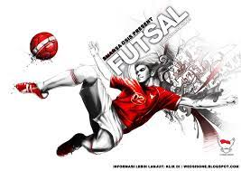
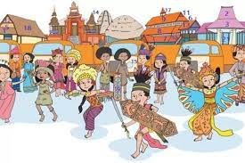
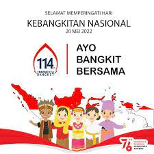

Kegiatan
Ekstrakurikuler
klub futsal
Apakah yg dimaksud futsal? Futsal adalah permainan bola yang dimainkan oleh dua regu, yang masing- masing beranggotakan lima orang. Tujuannya adalah memasukkan bola ke gawang lawan, dengan memanipulasi bola dengan kaki dan anggota tubuh lain selain tangan, kecuali posisi kiper.
Klub silat
Apakah pengertian dari silat? Pengertian, Tujuan dan Sejarah Pencak Silat Indonesia ... Secara etimologi atau dari asal kata, pencak silat terdiri dari dua kata. Pertama adalah kata “pencak” yang berarti gerak dasar beladiri yang terikat dengan suatu peraturan. Kedua, adalah kata “silat” yang memiliki arti sebagai gerak bela diri sempurna yang bersumber dari kerohanian.

Acara Budaya
Festival Budaya
Jelaskan apa yang dimaksud dengan festival budaya? Festival budaya yang dimaksudkan di sini adalah festival yang mengangkat tradisi sebagai bagian dari kebudayaan-kebudayaan yang ada di Indonesia. Festival dalam kategori ini adalah peristiwa yang dikelola baik oleh komunitasnya, atau dengan bantuan pemerintah yang telah memasukkannya ke dalam program kerjanya
Hari Kebangsaan
Hari Kebangsaan atau Hari Nasional adalah suatu hari yang dirayakan di suatu negara berdaulat atau yang tidak berdaulat. Hari kebangsaan dapat diperingati karena meraih kemerdekaan, berubahnya bentuk negara, atau ulang tahun raja, penjatuhan penguasa sebelumnya, dan sebagainya.
